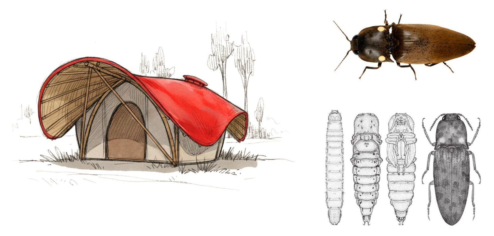

Terra + Bamboo
La meilleure architecture
ne domine pas le paysage.
Elle en fait partie.
Studio d'architecture et de construction en bambou et en terre · Colombie
Parlez-nous de votre projetAtelier dans la bambouseraie · vue de drone
Qui sommes-nous
Une architecture qui naît de la terre et évolue avec la technologie.
 Santiago MontoyaArchitecte
Santiago MontoyaArchitecte José Luis ChalcoArchitecte
José Luis ChalcoArchitecte
Teboo (Terra Bamboo) est un studio d'architecture et de construction né d'un lien profond avec la nature et de l'envie de construire de façon plus consciente et responsable.
Nous travaillons avec des matériaux vivants — bambou guadua, terre et ressources locales — choisis pour leur comportement structurel et leur beauté. Avant de construire, nous testons tout : modèles 3D, conception paramétrique et maquettes. Et dès que possible, nous construisons avec la communauté, parce que partager ce que l'on sait, c'est aussi construire.
Chaque projet doit s'intégrer à son environnement, respecter les écosystèmes et refléter l'identité de celles et ceux qui l'habitent. Nous n'imposons pas une forme : nous cherchons la plus juste pour chaque lieu.

Services
Ce que nous faisons
 01
01Conception architecturale
Maisons, écolodges, glampings et espaces communautaires pensés pour leur climat et leur paysage. Pour les projets touristiques, nous planifions du territoire jusqu'au moindre détail.
Par exemple:
 02
02Construction en matériaux naturels
Nous réalisons des chantiers en guadua, en terre (adobe, bahareque, pisé…) et en techniques mixtes, avec une grande exigence technique.
Par exemple:
 03
03Conseil et conception structurelle
Nous accompagnons chaque phase, de la conception au chantier : structure en guadua, conception paramétrique et visualisation 3D.
Par exemple:
 04
04Formations et ateliers
Ateliers pratiques de construction durable, centrés sur le bambou et la terre, sur chantier et avec les communautés.
Par exemple:
De l'esquisse au chantier
Chaque forme commence par l'observation. Pour la Cabane Cocuyo, à San Carlos (Antioquia), nous sommes partis d'un insecte lumineux de la région : ses deux taches de lumière sont devenues deux puits de lumière dans la toiture.

Portfolio
Nos projets en Colombie
Zoomez sur la carte et cliquez sur un point pour découvrir chaque projet.
Voir la liste des projets
Moments de chantier
Faites glisser pour parcourir, cliquez pour agrandir.
Formations
Nous partageons nos savoirs pour changer notre façon de construire.
À travers des ateliers, de la recherche et des ressources techniques, nous voulons faire émerger une nouvelle génération d'architectes et de constructeurs spécialisés en bioarchitecture.
- Ateliers d'écoconstruction en guadua, sur chantier et avec les communautés.
- Atelier de maquettes de précision.
Contact
Construisons quelque chose qui laisse une empreinte positive.
Racontez-nous votre idée. Nous serons ravis de vous aider à en faire un projet durable, fonctionnel et pérenne.
Démarrer la conversation- WhatsApp +57 320 481 5569
- E-mail teboo.arch@gmail.com
- Instagram @teboo_arch